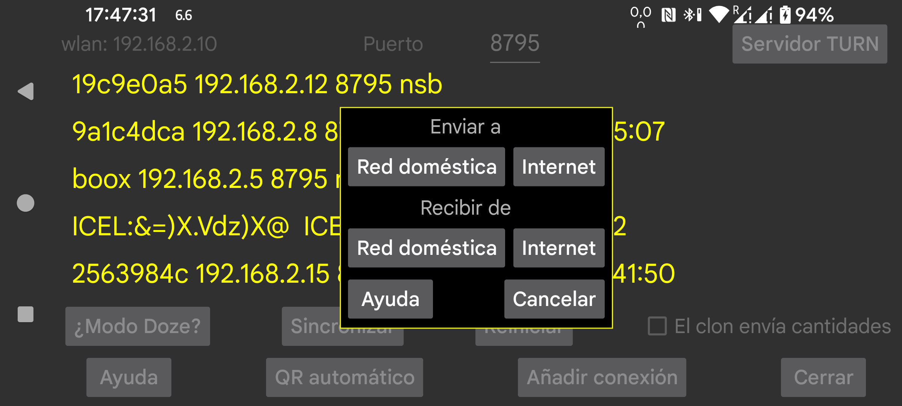

Puedes configurar el otro extremo de una conexión clon escaneando un código QR con el menú izquierdo → Foto en el otro teléfono.
Con menú central izquierdo → Clon → QR automático se generan automáticamente ambos extremos de la conexión. Puedes usarlo para enviar todos los datos de este teléfono a otro teléfono.
De esta forma pueden crearse muchas conexiones sin querer. Puedes eliminarlas tocándolas y pulsando Modificar y luego Eliminar.
Usa menú central izquierdo → Clon → Añadir conexión → QR para configurar manualmente un extremo en un teléfono y configurar el otro extremo escaneando el código QR.